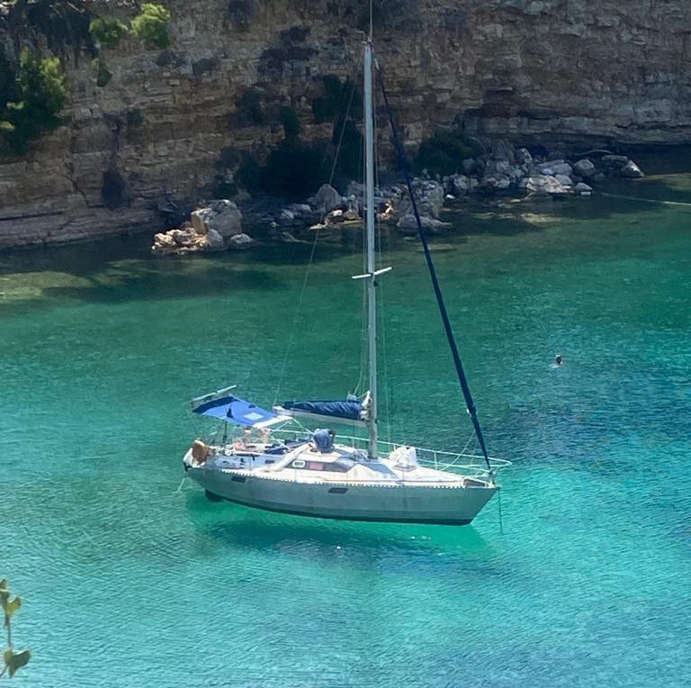
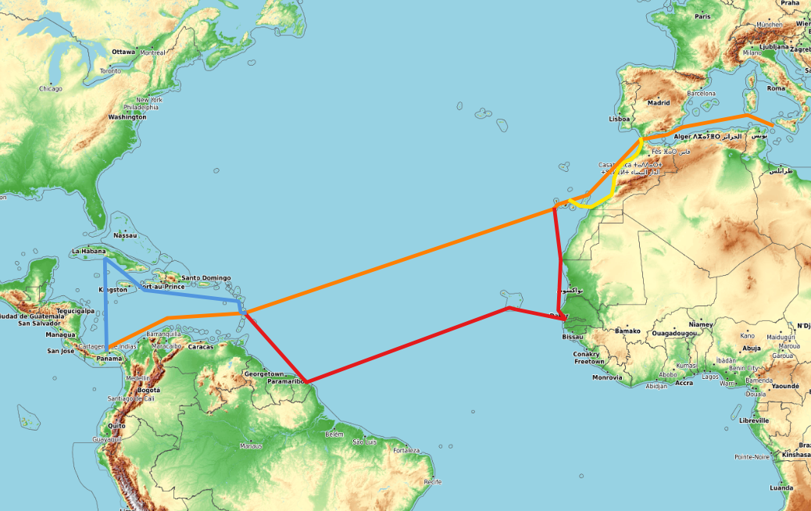

Naviguer au large
Dès que j'ai acheté FSM, le plan était de naviguer en Méditerranée et à proximitè pendant les premières années, jusqu'à ce que j'aie pleine connaissance et confiance dans le bateau. Le moment est désormais venu d’élargir notre horizon.
Mon idée initiale était de partir de la Mer Rouge et de me diriger vers l'Asie, mais les tensions dans la zone m'ont fait renoncer. Circuit donc « classique », vers l'ouest, en suivant les alizés.
Comme d´habitude, je me ferai un plaisir de partager quelques portions de navigation avec ceux qui se retrouvent dans mon idée du voyage, qui est essentiellement basée sur la soutenabilité, tant écologique qu'économique, sur le minimalisme et la simplicité, et sur le partage.
La route
Voici le programme général :
- Espagne - Îles Canaries
- distance: 700 NM
- durée minimale de navigation : 7 jours
- variation: Maroc (+150 NM)
- Îles Canaries - Martinique
- distance: 2700 NM
- durée minimale de navigation : 24 jours
- variations: Senegal/Gambia (+800 NM), Cabo Verde (+100 NM), Guyane (+500 NM)
- Martinique - Panama
- distance: 1200 NM
- durée minimale de navigation : 12 jours
- variations: Guadeloupe, Cuba (+400 NM), San Blas
- © Paolo Cavallini
- Design: HTML5 UP